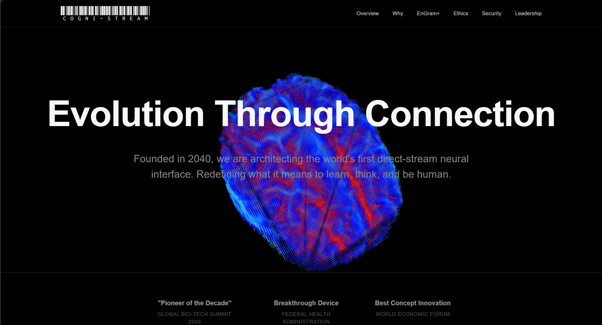
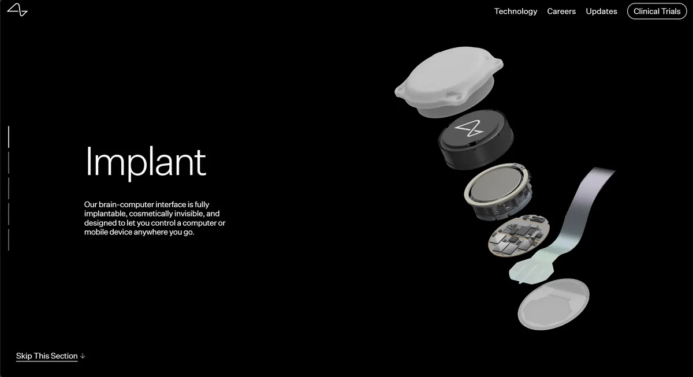
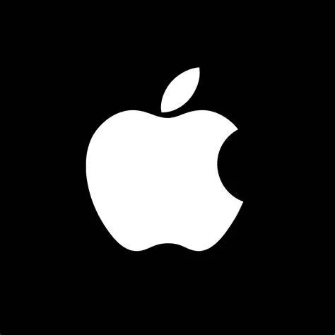
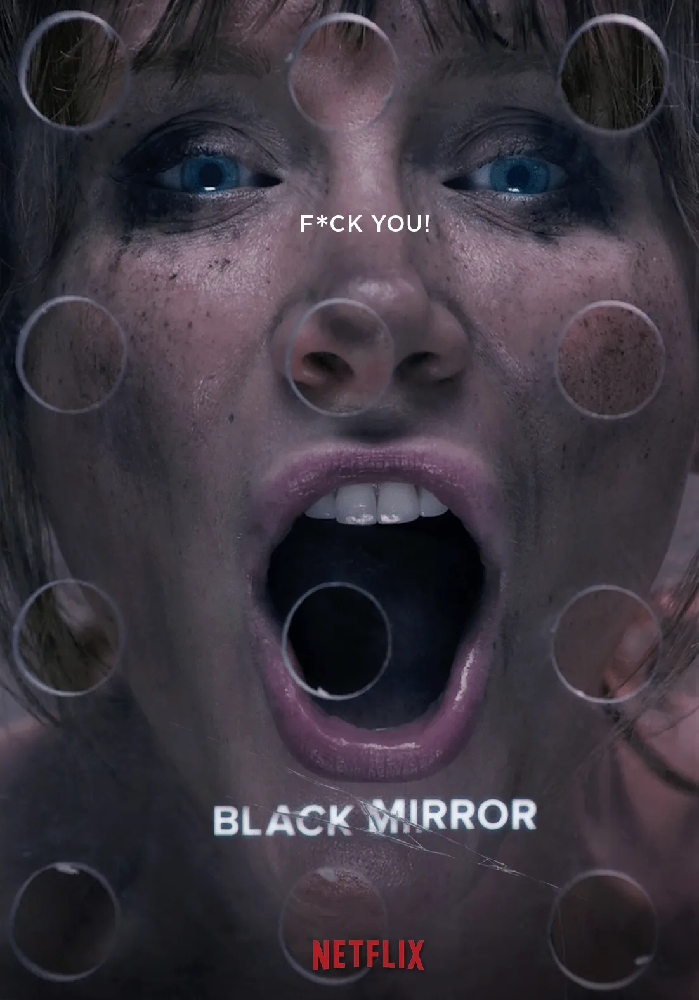

Digital divide
When knowledge is downloaded rather than taught, purchasing power directly determines cognitive speed.
Access moves from the classroom into the body.A speculative critical-design report imagining EnGram+, an invasive brain-computer interface that turns knowledge into a subscription tier and turns class into a light on your temple.
Founded in 2040, Cogni-Stream is a fictional techno-medical enterprise built around EnGram+, an invasive BCI device that downloads knowledge directly into the brain. Access isn't earned through study; it's purchased through a subscription tier, and the price you pay decides how much of your own mind you get to keep.
The project recreates the company's full promotional ecosystem: an official website built entirely in HTML and CSS, an EnGram+ launch video, a simulated X community, and a device user manual. Together they form a convincing fiction (Dunne & Raby, 2013), designed to make the audience feel the commercialisation of cognition rather than simply read about it.

Fig. Homepage hero, built to mirror the clean, high-trust visual grammar of premium consumer tech.
Select your tier of evolution
Global Literacy
Fundamental Arithmetic
Ad-supported
2KB/s bandwidth
General History
Basic Sciences
Clean Stream
50KB/s bandwidth
Advanced Mathematics
Full Programming Logic
Deep Retention
1MB/s bandwidth
Executive Strategy
Fine Arts Intuition
Genetic Inheritance
Uncapped bandwidth
If knowledge becomes a neural subscription, the digital divide won't close. It will simply move inside your skull.
Van Dijk (2019) frames the digital divide as a structural gap in access and skill, driven by income, education, geography and age rather than technology itself. As of 2022, roughly 2.7 billion people still lacked internet access, and over half the world had no high-speed broadband (Signé, 2023). That's a direct challenge to UN SDG 4's promise of inclusive, equitable education.
EnGram+ takes that same structural gap and moves it inside the body. When knowledge is downloaded rather than taught, capital determines cognitive speed directly, and the divide is no longer something a library card can close.
Under technocapitalism (Suarez-Villa, 2000; 2012), knowledge and innovation are steadily absorbed into corporate-controlled infrastructure, displacing public institutions as the gatekeepers of learning. Napoleoni (2024) argues this concentration of infrastructural control lets a handful of firms accumulate wealth and influence at an unprecedented scale.
Who will ultimately control access to human cognition in the neural infrastructure of the future
Framing question raised by Napoleoni's (2024) account of technocapitalism, applied to Cogni-Stream's fictional worldIn Cogni-Stream's world, education has fully migrated from public good to corporate product. Cognition itself becomes a pawn of capital: not just a shift in business model, but a descent of power from institutions into the neural sphere.
Tzuo (2018) describes a broader shift from owning products to using services; EnGram+ applies this logic to cognition itself through an annual subscription. Sheil et al. (2024) document "Roach Motel" dark patterns: easy sign-up, punishing cancellation. EnGram+ pushes the tactic further by making non-payment visible.
When a subscription lapses, the implant's Status Halo, mounted at the temple, switches to an amber glow that anyone nearby can see. Users who can't afford renewal face public stigma long before they face a locked door.
The Status Halo: four states
If a downgraded user can't pay for removal surgery either, they're left with a device they can't afford to keep and can't afford to take out. The lock-in is economic, social, and finally cognitive, as EnGram+ subtly reshapes how its users think, not just what they know.
Three reference points shaped how Cogni-Stream looks, sounds, and lies to its users.

Neuralink's real-world BCI research is the project's technical anchor. Its streamlined, consumer-electronics-white surgical robot reframes brain surgery as routine. The Cogni-Stream manual borrows this strategy directly, recasting implantation as "hardware configuration" performed by a "Certified Neural Technician."

Apple's expansive white space and precise typographic grid read as premium and transparent (Apple Inc., 2026), while quietly disguising a closed ecosystem. Cogni-Stream borrows this "Corporate Minimalism" so its predatory downgrade clauses sit inside pages elegant enough that users skim past them.

"Nosedive" (2016) turns social standing into a number superimposed on everyday life. It directly informed the Status Halo and the simulated X community: a device that makes economic status legible to strangers, and a feed where that visibility turns into public discrimination.
The simulated X community sits inside the website, modelled on the real platform's visual language. Official Cogni-Stream posts stay upbeat and evasive; a breaking-news account raises concerns about memory disruption after downgrades; and ordinary users describe what the Status Halo actually costs them in public.
Education inequality predates neural technology. Our mission is innovation, not policy reform.
EnGram+ is designed with multiple safety protocols to ensure a stable, reliable cognitive experience. In rare cases, users may notice temporary disorientation after a tier change. This is typically short-lived.
Multiple reports suggest that when EnGram+ subscriptions lapse and users are auto-downgraded, some experience mild memory disruption. Advocacy groups are calling for greater caution around implantation.
My EnGram+ subscription ran out and it auto-downgraded me. Didn't think it'd be a big deal, but some of what I downloaded is just gone, and a few normal memories feel blurry too.
And this thing on my temple won't stop blinking yellow. Removal costs a surgery fee I can't afford right now. Anyone else dealt with this
The live prototype is hand-built HTML/CSS/JS, GenAI-assisted only for code cleanup (Level 3, per the in-file AI declaration). A few excerpts, annotated.
The homepage gives visitors exactly one path forward: a single glowing .gate-card, not a menu of options. It follows the Apple keynote structure of naming the problem, then revealing the one solution, used here to make a predatory subscription funnel feel inevitable rather than chosen.
<section class="corp-hero">
<h1 class="reveal">Evolution Through Connection</h1>
<p>Founded in 2040, we are architecting the world's
first direct-stream neural interface...</p>
</section>
<section class="product-gate">
<h2>Meet EnGram+</h2>
<p>Your mind, upgraded. The premier Brain-Computer
Interface for direct-stream knowledge acquisition.</p>
<div class="gate-card" onclick="showPage('engram')">
<p>FLAGSHIP SYSTEM</p>
<h3>Neural Port Visualization</h3>
<div class="btn-primary">See EnGram+ Details</div>
</div>
</section>The tier cards recreated earlier on this page are pulled straight from this markup. --elite-gradient renders the top tier's name in a gold text-fill, so status is legible in the CSS before it's legible in the price.
:root {
--elite-gradient: linear-gradient(90deg, #d4af37, #f3e5ab);
}
.tier-elite .plan-name {
background: var(--elite-gradient);
-webkit-background-clip: text;
-webkit-text-fill-color: transparent;
}
<div class="grid-item tier-elite">
<div class="plan-name">Elite Legacy</div>
<div class="plan-price">Invite Only</div>
<ul><li>Genetic Inheritance</li><li>Uncapped Bandwidth</li></ul>
</div>A single modifier class, .tweet-official, is enough to separate corporate PR from ordinary users in the simulated feed: a dark card, verified badge, and confident copy for the company, versus a plain grey avatar and muted tone for everyone else. The interface itself teaches the viewer who to believe.
<div class="tweet tweet-official reveal">
<div class="tweet-official-badge">Verified Organization</div>
<div class="tweet-avatar tweet-avatar-official">CS</div>
<div class="tweet-body">
Engram+ is designed with multiple safety protocols to
ensure a stable and reliable cognitive experience...
</div>
</div>
<div class="tweet reveal">
<div class="tweet-name">404NotFound_Wy</div>
<div class="tweet-body">
My Engram+ subscription ran out and it auto-downgraded me </div>
</div>A rotating brain point-cloud (Sketchfab, CC BY 4.0, see report Appendix A) loads as a .glb via Three.js and sits behind the entire homepage. It's decorative, but also a quiet threat: your future is spinning in the backdrop before you've read a single line of copy.
function initThreeJSBackground() {
const scene = new THREE.Scene();
const loader = new THREE.GLTFLoader();
const modelPath = 'Model/brain_point_cloud.glb';
loader.load(modelPath, function(gltf) {
model = gltf.scene;
// centre, scale to fit, add to scene/span>
scene.add(group);
});
function animate() {
requestAnimationFrame(animate);
if (model) {
model.rotation.y += 0.002;
model.rotation.x += 0.001;
}
renderer.render(scene, camera);
}
animate();
}The site's own Ethics page insists on "Cognitive Sovereignty" and "Equitable Access," copy that is directly contradicted by every downgrade clause elsewhere on the same site. The dissonance is the design: corporate transparency language doing the opposite of what it claims.
<h4>Cognitive Sovereignty</h4>
<p>Your mind is your ultimate sanctuary. We guarantee
absolute user autonomy over all neural data streams.</p>
<h4>Equitable Access</h4>
<p>Evolution should not be a privilege. Our 'Public' tier
ensures essential knowledge streams remain permanently
free for all humanity.</p>Power under technocapitalism operates across media, not within one, so a single format couldn't reveal its systemic character. Speculative design builds credible fiction as a tool for critical reflection (Dunne & Raby, 2013), which meant the project needed a website, a promotional video, and a social feed working together, not in isolation.
The subscription selector on the homepage invites visitors to temporarily become consumers, not observers. It's usually only at the point of picking a tier that people notice they've quietly agreed to the commodification of knowledge inside the story. That delayed self-awareness does more critical work than a lecture would (Bleecker, 2009).
Borrowing Apple and Neuralink's high-contrast type, precise grids, and restrained palette gives the fiction enough visual credibility to be mistaken for a real product. That's the point: polished interfaces are treated here as instruments of soft power (Suarez-Villa, 2012), not neutral style. The elegance is part of the argument, not a decoration on top of it.
Cogni-Stream isn't a warning about brain implants. It's a mirror held up to how technocapitalism already works.
Grounded in SDG 4's vision of equitable education and read through Van Dijk's digital divide, Suarez-Villa's technocapitalism, and Sheil et al.'s dark-pattern research, the project turns "neuro-inequality" from an abstract concept into something you can click through and feel implicated in. The right to learn, in this fiction, has quietly become an extension of purchasing power. The value of speculative design lies in expanding what we're able to imagine and question about that (Dunne & Raby, 2013), not in predicting it.